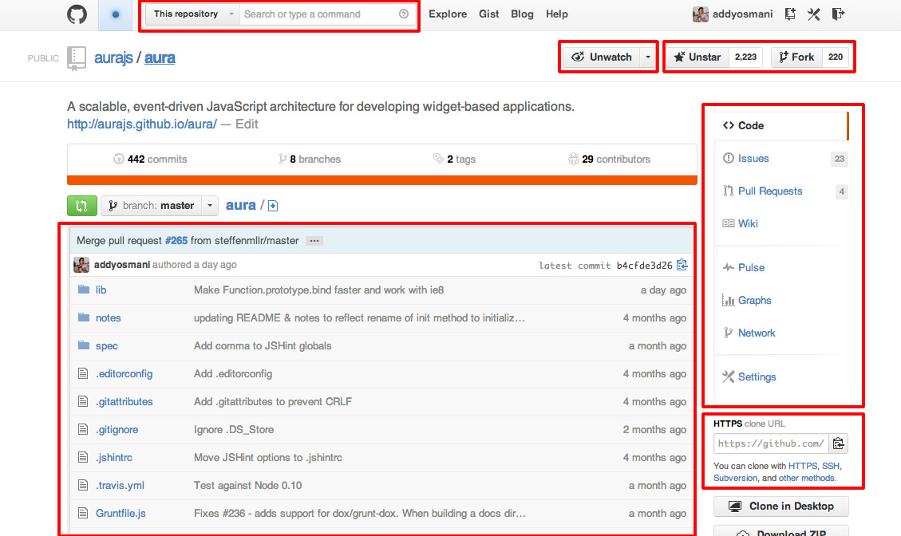

About
Definitions, examples and additional resourses.
What is Meridian?
Meridian is an event-driven, framework-agnostic, extensible architecture for wrapping your code into reusable and decoupled components and/or extensions that can easily communicate with each other, forked from the open source project called Aura JS.
Meridian works great with existing frameworks like Backbone.js or Ember.js, but is framework-agnostic, adapting many best-practice patterns for developing maintainable applications.
Meridian has first-class support for modern tools like Bower, Grunt and Yeoman and uses libraries like RequireJS under the covers (for now). As solutions like ES6 modules and Polymer become stable and usable, the project will move towards using them.
Community
OWF GOSS Board
Ozone Widget FrameWork (OWF) started as a project at a single US Government agency, but developed into a collaborative project spanning multiple federal agencies. Overall project direction is managed by "The OWF Government Open Source Software Board"; i.e. what features should the core team work on next, what patches should get accepted, etc. Gov't agencies wishing to be represented on the board should visit this website for more details. Membership on the board is currently limited to Government agencies that are using OWF and have demonstrated willingness to invest their own energy and resources into developing it as a shared resource of the community. At this time, the board is not considering membership for entities that are not US Government Agencies, but we would be willing to discuss proposals.
Components
A component is something atomic with a clear responsibility. A mini-app basically that can be instantiated (possibly multiple times) on an arbitrary part of your application. You might not be accustomed to thinking like this, preferring to build a highly coupled app. That might work just fine initially, but once it gets more complex you can run into trouble. Therefore, next time when you start building something bigger, stop for a moment and try to identify possible components.
Consider for example GitHub’s site:

Separating your application into smaller parts is essential for keeping your architecture clean, reusable and mainly maintainable. The principle is a known concept in computer science: “divide and conquer”. Divide everything up into smaller parts which have lower complexity, are easier to test and cause fewer headaches. Then compose them together to form your larger application.
But Wait: My Components Have to Communicate!
Meridian Components within your application need to communicate with each other. Such communication creates dependencies as component A needs to have a reference to component B if it needs to invoke some operation on it, right? Well, not necessarily, as that would again couple those components together and you couldn’t exchange component B arbitrarily without having to also change component A.
Therefore, a common practice for creating a modular architecture is to decouple communication among components through event broadcasting mechanisms. Meridian comes with global and component-level messaging patterns, making this a breeze.
A Quick Example
How does it work?
To build your app, you can assemble components via AuraJS's HTML API, by using the data-aura-* attributes.
Let's take an example. Let's say that we want to build a Github Issues app. We need to be able to:
- Display lists of issues from specific repos
- Filter those issues
Now let's make some components, but first we need a way to talk to Github's API.
Here is a simple AuraJS extension that does just that:
extensions/aura-github.js
1
2
3
4
5
6
7
8
9
10
11
12
13
14
15
16
17
18
19
20
21
22
23
|
define({
initialize: function (app) {
app.sandbox.github = function (path, verb, data) {
var dfd = $.Deferred();
var token = app.config.github.token;
verb = verb || 'get';
if (data && verb != 'get') {
data = JSON.stringify(data);
}
$.ajax({
type: verb,
url: 'https://api.github.com/' + path,
data: data,
headers: {
"Authorization": "token " + token
},
success: dfd.resolve,
error: dfd.reject
});
return dfd;
};
}
});
|
This extension exposes in all our components a way to talk to Github's API via the this.sandbox.github method.
To use it in your aura app:
app.js
1
2
3
4
5
6
7
|
require(['aura'], function(Aura) { var app = new Aura({ github: { token: 'current-user-token-here' } }); app.use('extensions/aura-github'); app.start('body'); }) |
And now, let's write the issues` component:
aura_components/issues/main.js
1
2
3
4
5
6
7
8
9
10
11
12
13
14
15
16
17
18
19
20
21
22
23
24
25
26
|
define(['underscore', 'text!./issues.html'], function(_, tpl) { template = _.template(customTemplate.html()); return { initialize: function() { _.bindAll(this); this.repo = this.options.repo; this.filter = this.options.filter || {}; this.sandbox.on('issues.filter', this.fetch, this); this.fetch(); }, fetch: function(filter) { this.filter = _.extend(this.filter, filter || {}); var path = 'repos/' + this.repo + '/issues'; return this.sandbox.github(path, 'get', this.filter).then(this.render); }, render: function(issues) { this.html(template({ issues: issues, filter: this.filter, repo: this.repo })); } }; }); |
Now we can place this component everywhere in our app by using Aura's HTML API based on data-attributes.
this.options.filter and this.options.repo can be passed to our component via the data-aura-repo and data-aura-filter attributes.
1
|
<div data-aura-component="issues" data-aura-repo="aurajs/aura"></div> |
You can even have multiple instances of this component in you page:
1
2
3
|
<div data-aura-component="issues" data-aura-repo="aurajs/aura"></div> <div data-aura-component="issues" data-aura-repo="emberjs/ember"></div> <div data-aura-component="issues" data-aura-repo="documentcloud/backbone"></div> |
Any other component can now emit issues.filter events that these components will respond to.
For example in another component that will allow the user to filter the issues lists, we can have:
1
|
this.sandbox.emit('issues.filter', { state: 'closed' }); |
Contribute
Non-Government
Contributions to the baseline project from outside the US Federal Government should be submitted as a pull request to the core project on GitHub. Before patches will be accepted by the core project, contributors have a signed Contributor License Agreement on file with the core team. If you or your company wish your copyright in your contribution to be annotated in the project documentation (such as this README), then your pull request should include that annotation.
Government
Contributions from government agencies do not need to have a CLA on file, but do require verification that the government has unlimited rights to the contribution. An email to goss-support@owfgoss.org is sufficient, stating that the contribution was developed by an employee of the United States Government in the course of his or her duties. Alternatively, if the contribution was developed by a contractor, the email should provide the name of the Contractor, Contract number, and an assertion that the contract included the standard "Unlimited rights" clause specified by DFARS 252.227.7014 "Rights in noncommercial computer software and noncommercial computer software documentation".
Government agencies are encouraged to submit contributions as pull requests on GitHub.
Issue submission
In order for us to help you please check that you've completed the following steps:
- Made sure you're on the latest version in master
- Used the search feature to ensure that the bug hasn't been reported before
- Included as much information about the bug as possible, including any output you've received, what OS and version you're on, etc.
- If making a bug report, please post a test case reproducing your issue on (jsFiddle.net) or (JS Bin). We will do our best to assist if this is not possible, but please understand this would greatly help improve or ability to help.
Pull Request Guidelines
- Please check to make sure that there aren't existing pull requests attempting to address the issue mentioned. We also recommend checking for issues related to the issue on the tracker, as a team member may be working on the issue in a branch or fork.
- Non-trivial changes should be discussed in an issue first.
- Develop in a topic branch, not master.
- Add relevant tests to cover the change.
- Squash your commits.
- Write a convincing description of your PR and why we should land it.
Copyrights
Software (c) 2014 The Boeing Company
The United States Government has unlimited rights in this software, pursuant to the contracts under which it was developed.
The AML Center (under OZONE) is released to the public as Open Source Software, because it's the Right Thing To Do. Also, it was required by Section 924 of the 2012 National Defense Authorization Act.
Released under the Apache License, Version 2.